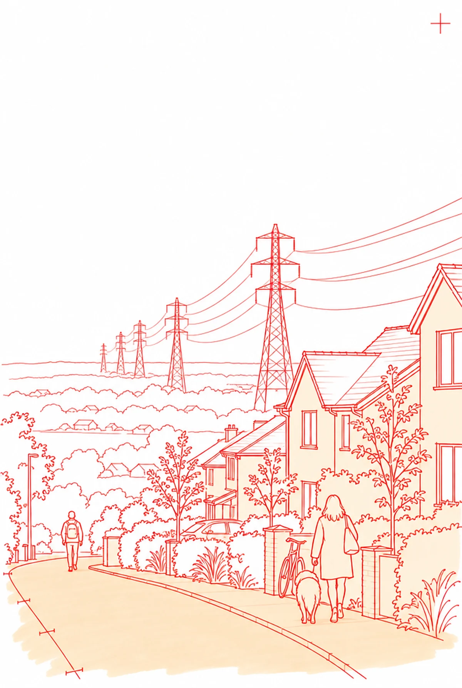
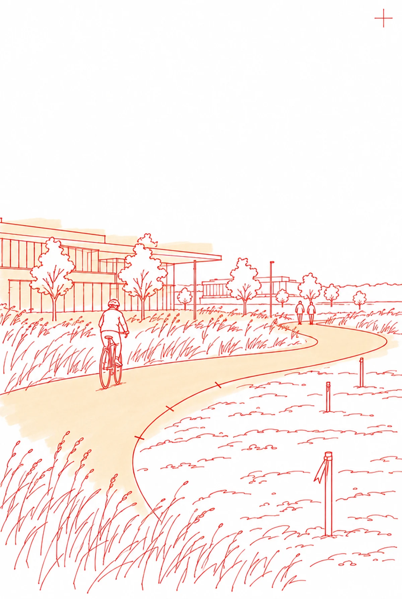
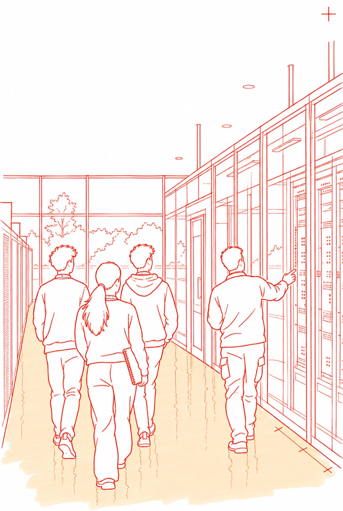
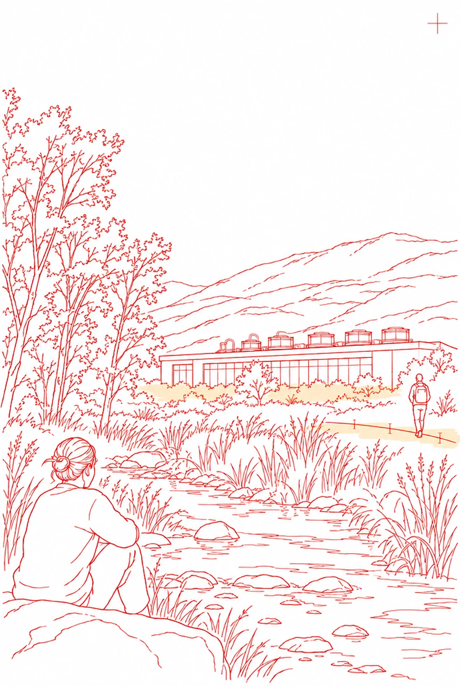
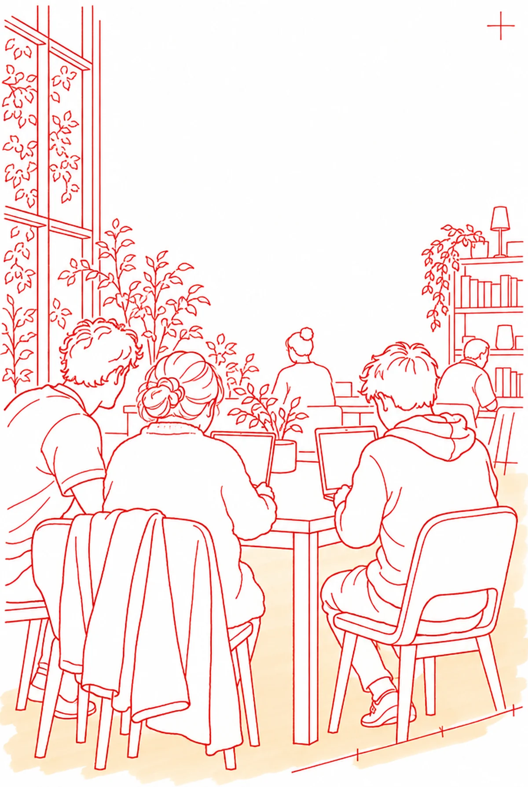
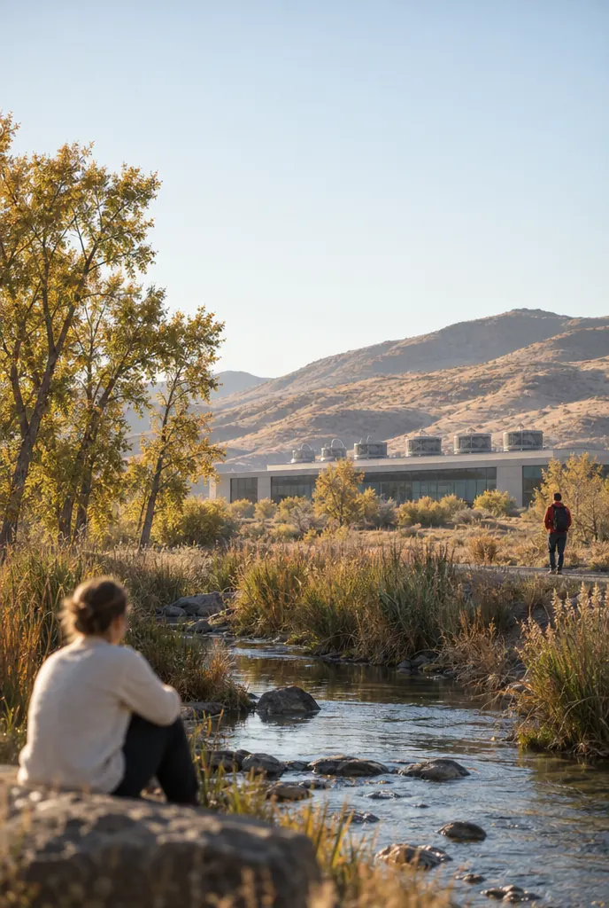

AA set of drawings: one sheet, a title block, the sheet index
Part of the community
Five promises to the places we call home.

Power responsibility
Pay our full share of grid costs so our demand does not raise residents’ bills.
BPapers on a drafting table: click one and it comes to the front and develops
Part of the community
Five promises.




Promise 03
Jobs and skills development
Create quality jobs and educational pathways for tomorrow’s workforce.
CCinema band: full width, the plan over the photograph, a rail of five

Promise 04
Natural resource protection
Use water and land carefully and report transparently.
DThe flip book: five sheets along a wall, the one you touch develops
Five promises to the places we call home.
Invest in roads, paths and public services around our sites.
Pay our full share of grid costs.
Create quality jobs and educational pathways.
Use water and land carefully.
Expand access to connectivity, skills and careers.